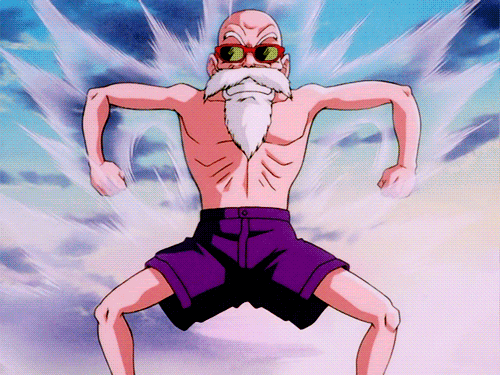

 Epsimax
Papa National
Papa National
Le Lore
Papa de Romane de son nom, papa de son peiti nom.
Il a commencé a jouer sur la faille sérieusement que très tardivement mais, compense
avec une bonne connaissance du jeu et un main de pool de champion assez peu méchaniques
Il main le caillou vivant, le roi des morts et le busher hurlant démacia a tout bouts de chances
Il critique ouvertement sa fille, (mais faut dire qu'elle le mérite)
Et maintenant il compte bien atteindre les sommets accompagné de ses compagnons!